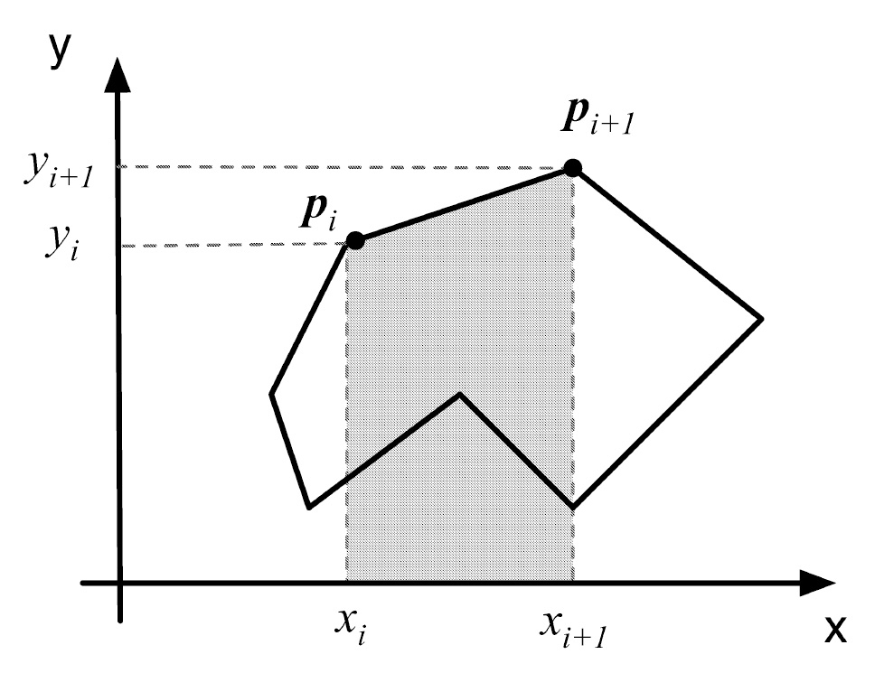

Como agrupar valores de tipos diferentes numa única unidade — e manipular, alocar e organizar essas unidades em C.
typedef struct { ... } Time; agrupa um int, uma string e outro int sob um único tipo.
p é um ponteiro para uma struct com um campo x — as duas formas abaixo são idênticas.
malloc(sizeof(...)) tira a struct da pilha e a coloca no heap, com vida própria.
Point2D e struct point2d são exatamente o mesmo tipo — só muda o que se escreve.
circle->center->x encadeia duas setas: primeiro chega ao Point2D, depois ao campo x dele.
Cada vértice é um Point2D; o polígono inteiro é um vetor dessas structs, na ordem dos vértices.

Uma struct reserva espaço para cada campo; uma union reserva um único espaço, do tamanho do maior campo.
Cada nome do enum é, por baixo, uma constante inteira sequencial, começando em 0.
Código-fonte, explicação linha a linha e simulação da execução passo a passo — sem precisar compilar nada. Depois, teste o que aprendeu no quiz.